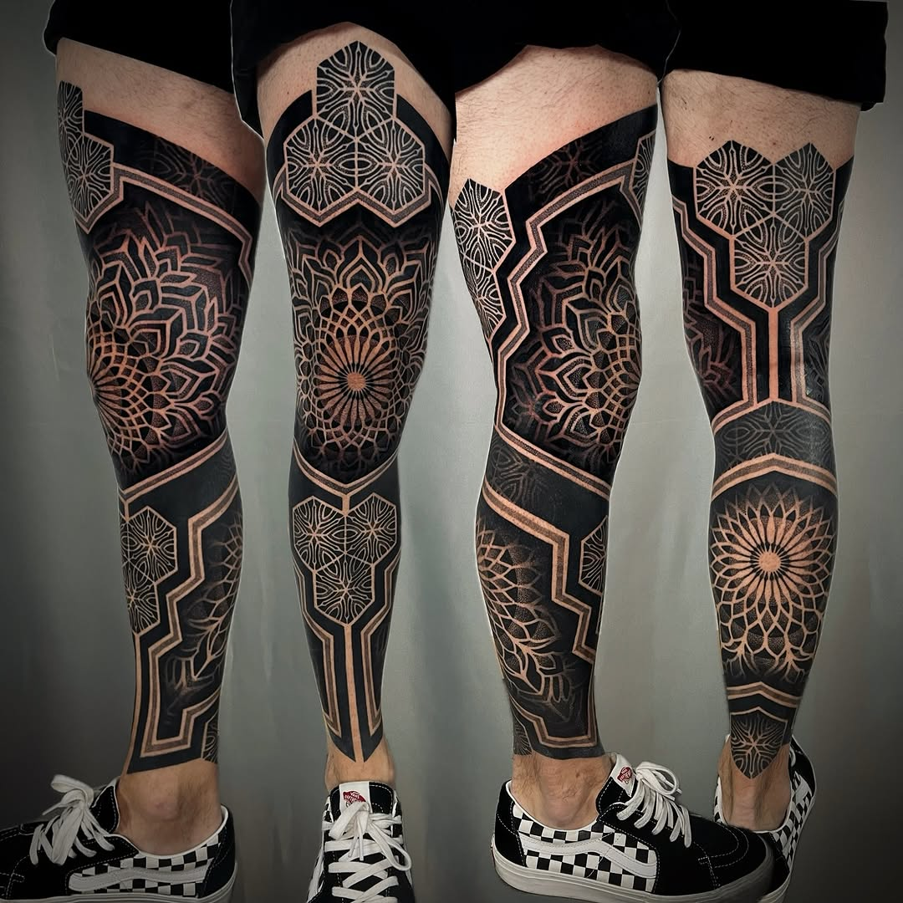
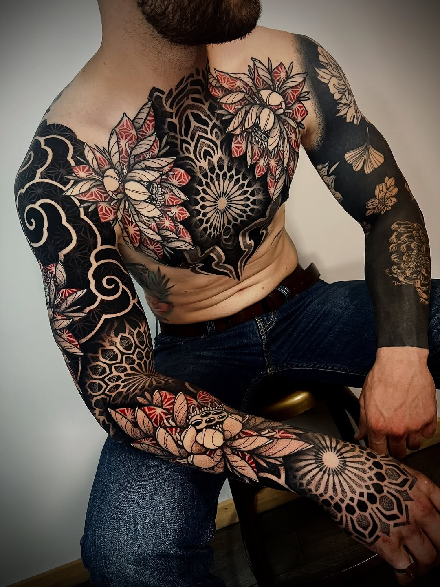

Issue 01 · Cover Story
Clément Berdah ⭐
For our debut issue, the Paris-based artist opened eleven years of work — every line drawn freehand on the body, never lifted from a grid.



"
Geometry isn't a style for me. It's a way of looking — at the body, at light, at the line itself.
— Clément Berdah · @monsieur_berdah
Read the full interview
A long conversation, in twelve questions.
On origin, the French scene, the Flower of Life, composition, and the tension that holds a piece together.
Open the Interview →